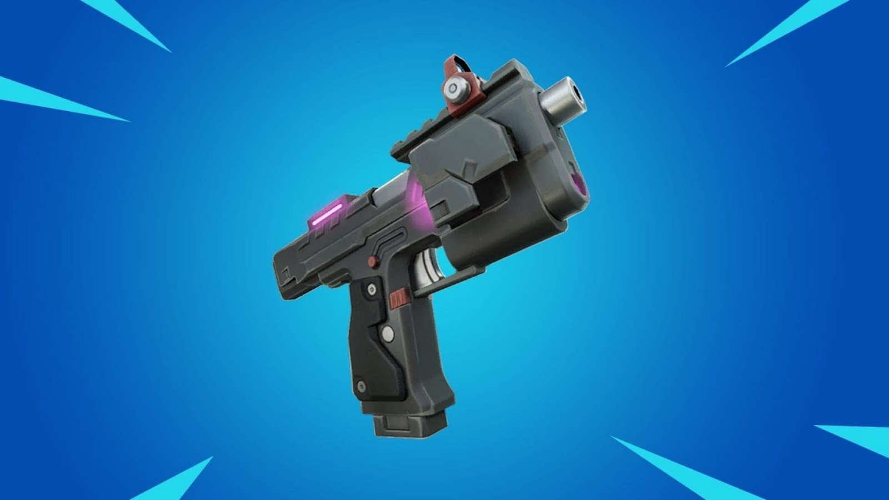

Fortnite felfedett egy hatamlas változást creative mapokra
A Fortnite bejelentette, hogy új változás jön a kreatív módban, a sértő tartalommal rendelkező pályákkal kapcsolatos közelmúltbeli problémák miatt.
FŐOLDAL
Kiszivárgott információk a közelgő Fortnite X TMNT event
A játékosok mostantól Fortnite játék közben ringathatják kedvenc Ninja Turtle-jukat, és hamarosan még több TMNT kozmetikumot viselhetnek.
FŐOLDAL
Megjelent a Fortnite Festival műanyag gitárvezérlő
A Fortnite Festival még idén kap egy Rock Band-szerű gitárvezérlőt, amely visszahívja a 2010-es régi hangegyeztető zenei játékokat
FŐOLDAL

Legújabb OP itemek
A Fortnite egy hasznos tárgyat tár fel, amelyet éppen 2023 novemberében, a Lock On Pistol és a Crash Pad Jr. nemrégiben történt kirobbanása nyomán.
FŐOLDAL